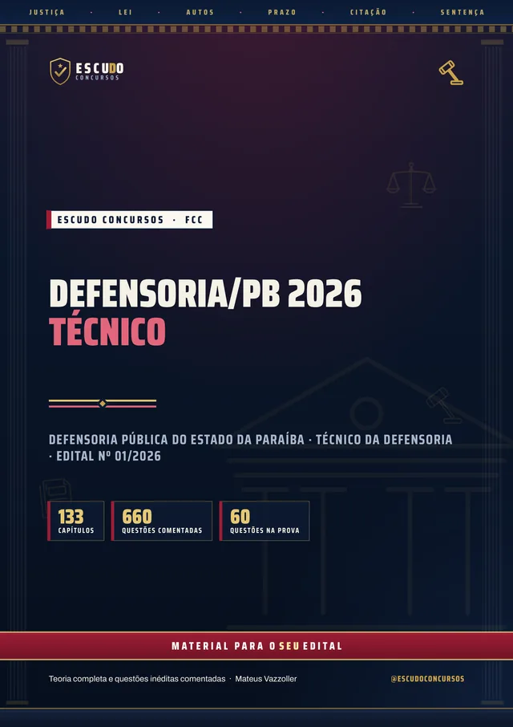
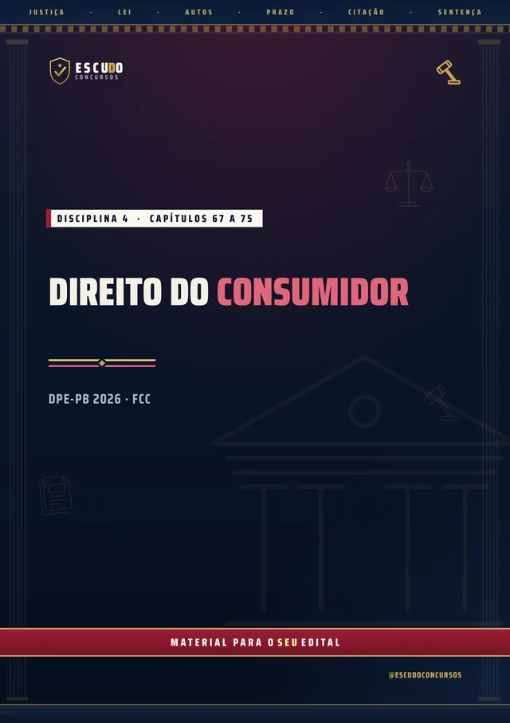
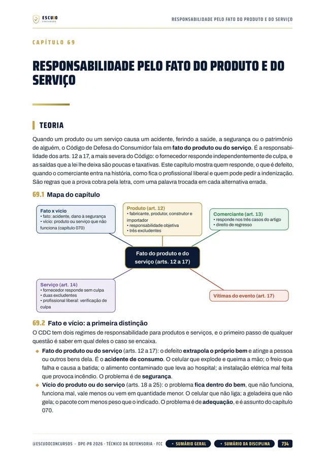
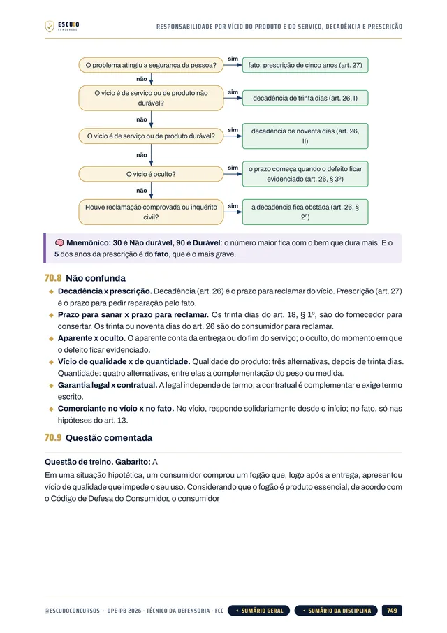
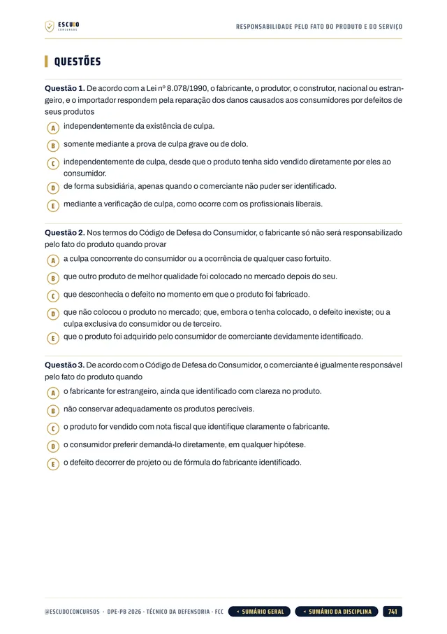
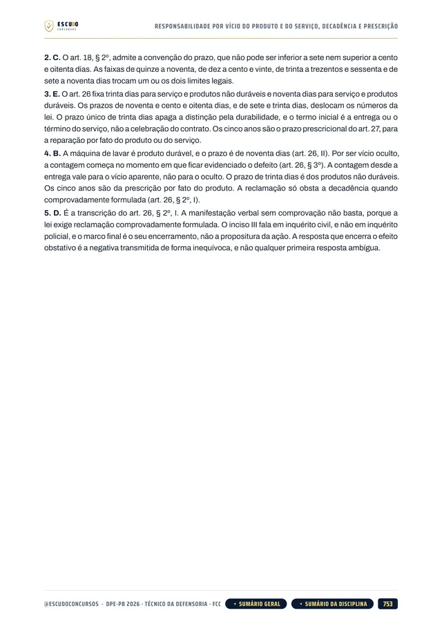

Simulado 1
No meio do caminho
Para medir onde você está nas duas provas e ajustar o estudo enquanto ainda dá tempo.
30 dias após a compra


660questões
comentadas
DPE-PB 2026 · Apostila em PDF
É o primeiro concurso de servidores da Defensoria Pública da Paraíba, e os Conhecimentos Específicos valem dois terços da nota. O seu material cobre as nove disciplinas da prova da FCC? Curso feito a partir do Edital nº 01/2026, item por item, com questões de A a E no padrão da FCC e gabarito comentado.
de R$ 47 por
R$37
com o cupom DPEPB37 até 13/11/2026. Pelo botão, o cupom já vai preenchido.
R$47
Curso completo, com acesso imediato.
O concurso
O Edital nº 01/2026 da Defensoria Pública do Estado da Paraíba (retificado pelos nº 02 e 03/2026) oferece 9 vagas e forma cadastro de reserva para Técnico da Defensoria, com vencimento inicial de R$ 4.042,50. O cargo exige ensino médio completo. As inscrições vão até 13 de novembro de 2026, com taxa de R$ 103,00.
A prova da Fundação Carlos Chagas (FCC) é em 28 de fevereiro de 2027, pela manhã, em João Pessoa: 60 questões de 5 alternativas, de (A) a (E), em 3 horas. Não há redação para o Técnico. A nota é a média ponderada de duas provas, Conhecimentos Gerais com peso 1 e Conhecimentos Específicos com peso 2.
Quem tirar 6,00 na média ponderada está habilitado, sem nota mínima por prova. Isso dá 36 acertos em 60 questões, em qualquer combinação, e as 40 questões de Específicos valem o dobro: neste concurso, toda questão vale o mesmo na nota final.
| Prova | Disciplinas | Questões |
|---|---|---|
| I | Conhecimentos Gerais: Língua Portuguesa, Legislação da Defensoria e Conhecimentos Jurídicos e Institucionais (peso 1) | 20 |
| II | Conhecimentos Específicos: Administração Pública, Direito do Consumidor, Constitucional, Administrativo, Direitos Humanos e Direito da Criança e do Adolescente, do Idoso, da Pessoa com Deficiência, da Mulher e da Pessoa em Situação de Rua (peso 2) | 40 |
| Cada prova vale de 0 a 10. Nota final = (Gerais + 2 x Específicos) / 3, habilitação com 6,00. | 60 |
O formato
Você estuda lendo, no seu ritmo, pela área de membros da Hotmart ou com os arquivos baixados. O curso foi feito a partir do Edital nº 01/2026, item por item, na ordem do conteúdo programático do Técnico da Defensoria, com a legislação considerada até a data da publicação do edital (18/09/2026).
Páginas reais do PDF
Toque numa página para ver em tamanho maior.





O que você recebe
Curso em PDF organizado em módulos pelas disciplinas do edital, com 1.556 páginas no padrão visual ESCUDO, para ler no computador, no tablet, no celular ou no app da Hotmart. Não há videoaulas.
133 capítulos cobrindo as disciplinas da prova: Língua Portuguesa (25 capítulos), Legislação da Defensoria e Conhecimentos Jurídicos (21), Administração Pública (19), Direito do Consumidor (9), Direito Constitucional (14), Direito Administrativo (20), Direitos Humanos (8) e Criança, Idoso, Pessoa com Deficiência, Mulher e População em Situação de Rua (16), mais um capítulo de abertura sobre a prova e o plano de estudo.
660 questões inéditas com 5 alternativas, de (A) a (E), no padrão da FCC, todas com gabarito comentado: por que a correta está correta e onde está o erro de cada uma das outras.
Legislação da Defensoria: Constituição Federal (arts. 5º, 37 e 134), Lei Complementar nº 80/1994, Constituição da Paraíba, Lei Complementar estadual nº 205/2024 e Lei Complementar estadual nº 58/2003, no recorte do edital retificado.
Os Conhecimentos Específicos, que pesam o dobro, em 86 capítulos: gestão pública aplicada às Defensorias, Código de Defesa do Consumidor, Constituição, Direito Administrativo com a Lei 14.133, Direitos Humanos e os estatutos da criança, do idoso, da pessoa com deficiência, da mulher e da população em situação de rua.
Caso prático no atendimento da Defensoria ao longo da teoria, para você ver o assunto na rotina de quem atende o assistido.
Teoria com recursos para memorizar: mapa de cada capítulo, lei transcrita onde o número ou a palavra decide a questão, fluxogramas, quadros de "pegadinha" e "não confunda", revisão relâmpago e teste de memória no fim de cada capítulo.
Navegação clicável: do sumário você vai direto ao capítulo, e volta pelo botão do rodapé.
2 simulados inéditos no formato exato da prova (60 questões de A a E, 20 de Gerais e 40 de Específicos), cada um com caderno de comentários. O Simulado 2 é liberado na semana anterior à prova, para o seu último teste.
Área de membros
| Módulo | Conteúdo | Liberação |
|---|---|---|
| M0 Comece aqui | Apresentação + capítulo 001 (como é a prova e como usar o curso). Bônus: PDF completo para baixar e imprimir | Na compra; o PDF completo no 8º dia |
| M1 Língua Portuguesa | Capítulos 002 a 026 | Na compra |
| M2 Legislação da Defensoria e Conhecimentos Jurídicos | Capítulos 027 a 047 | Na compra |
| M3 Administração Pública | Capítulos 048 a 066 | Na compra |
| M4 Direito do Consumidor | Capítulos 067 a 075 | Na compra |
| M5 Direito Constitucional | Capítulos 076 a 089 | Na compra |
| M6 Direito Administrativo | Capítulos 090 a 109 | Na compra |
| M7 Direitos Humanos | Capítulos 110 a 117 | Na compra |
| M8 Criança, Idoso, Pessoa com Deficiência, Mulher e População em Situação de Rua | Capítulos 118 a 133 | Na compra |
| M9 Simulado 1 | 60 questões, caderno de comentários | 30 dias após a compra |
| M10 Simulado 2 | 60 questões, caderno de comentários | 21/02/2027 (7 dias antes da prova) |
Treino no formato da prova
Cada simulado tem 60 questões de A a E, 20 de Conhecimentos Gerais e 40 de Específicos, no formato exato da prova, com caderno de comentários.
Simulado 1
Para medir onde você está nas duas provas e ajustar o estudo enquanto ainda dá tempo.
30 dias após a compra
Simulado 2
Liberado na semana anterior à prova de 28/02/2027.
21/02/2027
Para quem é
Para quem vai prestar Técnico da Defensoria da DPE-PB em 28/02/2027 e quer estudar pelo programa do edital, com a Legislação da Defensoria e os Conhecimentos Específicos, que valem dois terços da nota, cobertos por inteiro.
Você tem 7 dias de garantia pela Hotmart. Se não for o que você esperava, pede o reembolso pela própria Hotmart, dentro do prazo.
Sem surpresa na área de membros
Na compra: todas as disciplinas em PDF, uma por módulo, com a teoria e as questões comentadas. É o curso inteiro, para começar a estudar no mesmo dia.
8 dias após a compra: o PDF completo para imprimir. É o mesmo conteúdo dos módulos num arquivo só, liberado depois da garantia de 7 dias.
Simulado 1: 30 dias após a compra, para medir onde você está no meio da preparação.
Simulado 2: em 21/02/2027, 7 dias antes da prova, para o último teste.
O PDF completo e os simulados aparecem bloqueados na área de membros até a data de cada um: não é conteúdo faltando, é a liberação programada.
Dúvidas
Não. É um curso 100% em PDF: teoria, questões comentadas e simulados para ler e resolver.
O acesso é imediato depois da confirmação do pagamento, pela área de membros da Hotmart (web ou app). O PDF completo para baixar e imprimir é liberado no 8º dia.
O Simulado 1 é liberado 30 dias após a compra. O Simulado 2 é liberado em 21/02/2027, uma semana antes da prova.
Cada prova vale de 0 a 10. A nota final é a média ponderada: Conhecimentos Gerais (20 questões) com peso 1 e Conhecimentos Específicos (40 questões) com peso 2. Quem tira 6,00 está habilitado, sem nota mínima por prova, o que equivale a 36 acertos em 60. O capítulo 001 explica a estratégia.
Não para o Técnico da Defensoria: a prova é só objetiva. Os capítulos de Língua Portuguesa cobrem o que a FCC cobra nas questões do programa.
Não. O Analista tem programa próprio e redação. Este curso é para o cargo de Técnico da Defensoria, sem especialidade.
Não. As 660 questões de treino e as dos simulados são inéditas, escritas no padrão da FCC a partir do conteúdo programático do edital.
Você tem 7 dias de garantia pela Hotmart. Se não for o que você esperava, pede o reembolso.
DPE-PB 2026 · Técnico da Defensoria
de R$ 47 por
R$37
com o cupom DPEPB37 até 13/11/2026.
R$47
Curso completo, com acesso imediato.
Material para o SEU edital. ESCUDO Concursos.